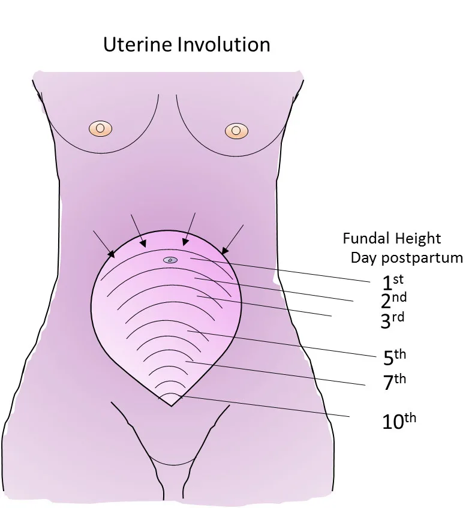

Expanded Nursing Uganda Explanation
Normal Puerperium should be reviewed through safe maternal and newborn assessment, early recognition of danger signs, respectful communication and timely referral. Connect the definition to vital signs, bleeding, fetal or newborn wellbeing, patient education and local protocol requirements.
01 Normal Puerperium
Puerperium, also known as the postpartum period, is the time following childbirth or abortion, commencing after the expulsion of the placenta and membranes, and typically lasting for about 6 to 8 weeks.
During this phase, the body’s tissues, especially the pelvic organs, undergo a process of returning approximately to their pre-pregnant state, both anatomically and physiologically.
A woman progressing through the puerperium phase is referred to as a “ puerpera .”
The postpartum period is generally divided into three distinct phases:
- Immediate Puerperium : This initial phase spans the first 6 hours after childbirth.
- Early Puerperium: The second phase extends up to 6 days postpartum.
- Remote Puerperium: The final phase continues for 6 weeks after childbirth .
02 Management of Puerperium
Principles:
The management of puerperium is guided by several essential principles:
- Restoring the mother’s health to optimal levels.
- Preventing infections and ensuring a hygienic environment.
- Providing proper care for the breasts to facilitate breastfeeding.
- Encouraging the mother to consider contraceptive options for family planning.
Aims:
The management of puerperium focuses on achieving the following aims:
- Establishing the physical and emotional well-being of the mother.
- Facilitating lactation to promote breastfeeding.
- Educating the mother on best practices for caring for her newborn baby.
- Preventing complications that may arise during this postpartum period.
The fourth stage of labor, commencing with the birth of the placenta and lasting for one hour, is a critical phase of initial recovery from the stress of labor and delivery. Close monitoring and specific activities are conducted during this period:
- Evaluation of the Uterus: Palpating the uterus to ensure proper contraction.
- Massaging the fundus to expel any clots and promote uterine involution.
- Measuring the fundal height in relation to the umbilicus.
- Encouraging the mother to empty her bladder, which aids in uterine contraction.
- Inspection and Evaluation of the Perineum, Vagina, and Cervix: Carefully inspecting the perineum for discoloration, swelling, lacerations, or tears.
- If certain factors are present, the cervix and upper vagina require examination: A well-contracted uterus with continuous vaginal bleeding for an hour.
- Pushing before full dilation of the cervix.
- Rapid labor and precipitous delivery.
- Manipulation of the cervix during labor, such as pushing back an edematous anterior lip.
- Traumatic procedures during delivery, like forceps delivery.
- Traumatic delivery, such as in the case of a large baby or shoulder dystocia.
- Inspection and Evaluation of the Placenta, Membranes, and Umbilical Cord: This examination is conducted before any repairs, such as laceration repair or episiotomy.
- Cleaning of the Perineum and Positioning of Legs.
- Post-Delivery Observations: Monitoring and recording vital signs, including blood pressure, pulse, temperature, and respiration.
- Offering Food and Fluids: Providing warm drinks and nourishing food to the mother.
- Ensuring she stays warm and comfortable.
- Encouraging Breastfeeding: Motivating the mother to breastfeed her baby, promoting bonding and initiating lactation.
At the end of this period, observations are repeated to ensure everything is normal. If the mother’s condition is satisfactory, she and the baby can be transferred to the postnatal ward for further care and support.
03 Further Management in the Postnatal Ward (1st 6 Hours after Birth):
During this critical period, the puerperal mother requires extra care and attention as she may be tired and susceptible to bleeding. Upon receiving information about a new patient, the postnatal ward prepares to welcome and make the mother comfortable in her bed.
The following care is provided during the first 6 hours:
- Rest and Sleep: Rest and sleep are crucial for the mother’s recovery and emotional well-being.
- Visitors are limited during the day to reduce anxiety and discomfort.
- A calm and peaceful atmosphere is maintained to ensure relaxation.
- If sleep is difficult, sedatives may be prescribed to address possible signs of puerperal psychosis.
- Ambulation : After 6 hours of normal delivery, mothers are encouraged to get out of bed and walk around.
- Ambulation promotes good circulation, drainage of lochia, and aids in uterine involution.
- It also helps improve muscle tone and venous return from the lower limbs, reducing the risk of venous thrombosis.
- Diet : A well-balanced diet rich in proteins, vitamins, and nutrients is provided to help the mother regain strength and ensure successful lactation.
- Plenty of fluids are encouraged to prevent constipation.
- Vitamin, iron, and folic acid supplements are given as needed.
- Care of the Bladder: The mother is encouraged to empty her bladder regularly, as large amounts of urine are excreted during the early days of puerperium.
- Difficulties in passing urine may arise due to bruising or lack of privacy, leading to urinary retention.
- Ensuring regular bladder emptying helps prevent complications like subinvolution of the uterus, postpartum hemorrhage, and urinary tract infections.
- Hygiene : Vulval toilet should be performed at least 3 times a day, and pads should be changed whenever soiled.
- Daily baths and changing of clothing and bed linen are encouraged.
- Clean and suitable bathrooms are provided for use.
- General Examination: A daily head-to-toe examination is conducted to check for anemia, edema, jaundice, and signs of dehydration.
- Fundal height is measured using a tape measure.
- The vulva is inspected to assess the state of lochia, including color, amount, and smell.
- Legs are examined daily for signs of deep vein thrombosis (DVT).
- Care of Breasts: The breasts are cleaned before each feeding.
- Immediate breastfeeding after delivery helps prevent postpartum hemorrhage and fosters early bonding.
- Proper breast attachment may require supervision and assistance initially.
- Continued breastfeeding prevents breast engorgement.
- Demand feeding is encouraged for a good milk flow.
- Mothers are advised to wear a well-fitting brassiere for breast support.
- Relief of Pain: After-pains may occur within 2-3 days after delivery, and pain relief, such as Panadol, is provided.
- Perineal Care: The Perineal pad is inspected and changed as needed.
- Coitus is avoided for up to 6 weeks or until the perineum has healed.
- Proper hygiene is maintained, and application of native medicine is discouraged.
- Postnatal exercises are recommended for recovery.
During this crucial postpartum period, diligent care and support are provided to ensure the mother’s smooth transition into motherhood and to promote her overall well-being.
REQUIREMENTS
TROLLEY
- Top Shelf Bottom Shelf Bedside
- Sterile dressing pack containing: Sterile drum of cotton wool Screen
- – 2 dressing towels Sterile drum of gauze Bedpan and cover
- – 2 non-toothed dissecting forceps 2 flannels Hand washing equipment
- – 2 dressing forceps Antiseptic solution Hamper
- – 3 gallipots (1 for lotion, 1 for swabs, 1 for gauze) Normal saline
- – A pair of stitch scissors or clip remover (if required) Bathing soap
- – Probe Dressing mackintosh and towel
- – Sinus forceps Apron
- – Gloves
- – Cheatle forceps
- – 2 sanitary towels
- – 2 jags of water (1 for hot, 1 for cold)
- – A small jar for pouring water
- – 2 receivers
Following the general rules, the postnatal care for the mother during the first 6 hours after birth involves the following steps:
- Request mother to empty the bladder and bowel.
- Fold back the clothes to the foot of the bed, leaving the patient covered up to the waist with a top sheet.
- Put the mother in a dorsal position.
- Wash hands, put on clean gloves, and remove the soiled pad, disposing of it properly.
- Inspect the genitalia for signs of infection.
- Examine lochia, noting its amount, color, consistency, and odor.
- Place a bedpan in position.
- Wash the pubic area, inner part of thighs, and buttocks using warm soapy water and a flannel.
- Carefully wash the genitalia using the dominant hand to cleanse while the non-dominant hand pours water. Pay attention to skin folds and repeat on the opposite side.
- Rinse and dry the area thoroughly from perineum to rectum using a flannel.
- Remove the bedpan.
- Place a clean pad in position and ensure the mother is comfortable.
- Clear away the trolley used for the procedure.
- Document the procedure for records and future reference.
The woman should be instructed clearly about how to cleanse herself after passing urine and defecation. These instructions include:
- Washing hands before and after perineal care.
- Avoiding touching stitches with fingers; use a wet or disposable wiper to wipe from front to back across the stitches, rinse, and dry from front to back.
- Proper application of the perineal pad to prevent movement with body motions.
- Applying and removing the perineal pad from front to back.
- Postnatal Exercises:
Postnatal exercises are important for proper circulation and regaining tone in abdominal and pelvic floor muscles. These exercises include deep breathing and free movement in bed, relaxation techniques, using pillows for support, sitting and feeding postures, and pelvic floor exercises.
- Observations :
Monitoring temperature, pulse, respiration (TPR), and blood pressure (BP) should be done twice and recorded.
- Care of the Bowel:
Bowel movements may be sluggish in the first 2 days after delivery, but constipation should be avoided as it can contribute to subinvolution of the uterus. A diet with sufficient roughage and fluids is encouraged, and mild laxatives like milk of magnesia may be given if necessary.
- Prevention of Infection:
Strict aseptic precautions must be observed during vulval toilet to prevent infections. Proper use of gowns, masks, and gloves, along with adequate sterilization of equipment, is essential. Anyone with a cold or septic spot should not attend to a puerperal mother, and the number of visitors should be restricted.
- Rooming-In or Bedding-In:
After normal delivery, the baby should be kept with the mother in a cot beside her bed or in her bed when she is awake. This promotes bonding and helps the mother become familiar with baby care.
- Immunization :
Mothers susceptible to rubella infection should be vaccinated, and they should be advised to postpone pregnancy for at least 2 years. Tetanus toxoid (TT) should be given at discharge if not administered during pregnancy. Unimmunized Rh-negative mothers who delivered Rh-positive babies should receive anti-D.
- Involution of the Uterus:
Daily palpation of the fundus is essential to ensure adequate involution. The uterus should feel smooth, firm, well-contracted, and not painful. Measure the fundal height daily using a tape measure to identify subinvolution if the uterus remains the same size for several days.
- Records :
Keeping detailed records helps assess the mother’s progress and detect early deviations from normal. Puerperal rounds are done at least once a day to assess the mother’s physical and emotional well-being.
- Discharge of the Mother:
Before discharge from the ward, the mother and baby are fully examined to ensure their well-being. The midwife ensures that
- vital signs
- breast condition
- breastfeeding
- involution of the uterus
- lochia
- bladder, bowel, and perineum are all normal.
For the baby, the midwife checks
- sucking,
- sleeping pattern,
- umbilicus cleanliness, and vaccination status, ensuring that BCG and polio 0 vaccines are given.
04 Advice on Discharge:
For the Mother:
- Personal Hygiene and Breast Care: Continue practicing good hygiene, especially in the perineal area.
- Cleanse the breasts before and after each breastfeeding session.
- Well-Balanced Diet: Maintain a nutritious diet rich in proteins, vitamins, and nutrients to support recovery and lactation.
- Rest and Sleep: Ensure adequate rest and sleep to aid in recovery and overall well-being.
- Postnatal Exercises: Continue with postnatal exercises to promote circulation and tone muscles.
- Avoid Heavy Lifting: Refrain from lifting anything heavier than the baby for the first 2-3 weeks to allow the body to recover.
- Medications: Take prescribed medications as directed by the healthcare provider.
- Vaginal Discharge and Menstruation: Inform the mother about postpartum vaginal discharge, which will gradually decrease and eventually stop.
- Menstruation may resume within 2-3 months but may be delayed if fully breastfeeding.
- Sexual Intercourse: Advise avoiding sexual intercourse for about 6 weeks to allow bruised tissues to heal properly.
- Postnatal Examination: Emphasize the importance of attending the postnatal clinic for a check-up at 6 weeks after delivery.
For the Baby:
- Exclusive Breastfeeding: Encourage exclusive breastfeeding for the first 6 months to provide optimal nutrition and immune protection.
- Bottle Feeding (if applicable): Instruct on proper care and preparation of formula.
- Explain how to clean and sterilize bottles, nipples, containers, spoons, or feeding dishes.
- Demonstrate how to hold the baby during feeding to ensure proper latch and comfort.
- Show how to hold the feeding bottle to prevent the baby from sucking air.
- Burping: Teach the technique for burping the baby after feeding to alleviate gas.
- Baby Bathing and Dressing: Explain how to bathe and dress the baby properly.
- Guide on caring for the genital area.
- Cord Care: Provide instructions on caring for the umbilical cord to prevent infection.
- Diaper Rash Prevention and Treatment: Educate on preventing diaper rash and how to treat it if it occurs.
- Checking Baby’s Temperature: Teach how to check the baby’s temperature safely and accurately.
- Recognizing Baby’s Needs: Help the mother understand the signs and cues of the baby’s needs, such as hunger, sleep, and comfort.
- Check-Up and Immunization: Stress the importance of regular check-ups and immunizations for the baby’s health and protection.
05 Nursing Uganda Clinical Lens
Use Normal Puerperium as a practical nursing topic, not only a memorized definition. Read the topic through the safety of two patients: the mother and the fetus or newborn.
- What to understand first: define normal puerperium, identify the normal or expected pattern, then explain what changes when the patient is unwell.
- Why it matters in care: the nurse must recognize risk early, explain findings clearly, document accurately and know when to escalate.
- How to revise it: connect each point to assessment, nursing diagnosis or care problem, intervention, rationale and evaluation.
06 Assessment Guide
- Maternal vital signs, bleeding, pain, contractions, uterine tone and danger signs.
- Fetal or newborn wellbeing, feeding, temperature, breathing and activity.
- History of pregnancy, parity, medications, allergies, investigations and referral risks.
07 Nursing Priorities, Rationales and Outcomes
- Recognize danger signs early and escalate without delay.
- Provide respectful communication, privacy, infection prevention and clear documentation.
- Teach the mother what to monitor at home and when to return urgently.
The rationale for these priorities is patient safety: nursing actions should prevent deterioration, reduce discomfort, support recovery and create clear evidence for the next caregiver.
- Expected outcome: Mother and baby remain stable, danger signs are acted on early, and the family understands follow-up instructions.
08 Patient Teaching and Revision Check
- Explain normal puerperium in simple language the patient or caregiver can repeat back.
- Teach warning signs, medicine or follow-up instructions, hygiene or lifestyle points where relevant.
- For exams, prepare a short answer using: definition, causes or risk factors, signs, assessment, management, complications and prevention.
- For ward practice, document baseline findings, actions taken, patient response and the plan for review.
Illustrations and Diagrams (1)

Related Video Lectures
Watch nursing lecture videos on YouTube for this topic. Opens in a new tab.
Watch on YouTubeExternal link: YouTube may use its own cookies and terms. Nursing Uganda is not affiliated with YouTube.